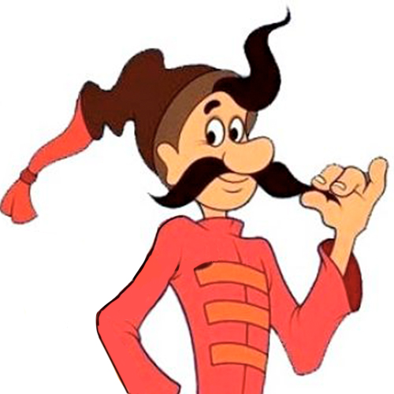
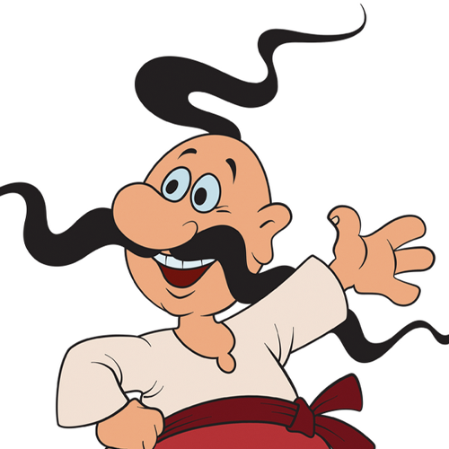

Навіть зустрічаємося з інопланетянами

Козак Око
Маленький козак, але бадьорий та войовничий

Козак Грай
Отаман нашої команди. Спокійний та кмітливий козак

Козак Тур
Здоровий та сильний козак. Часто буває сором'язливим